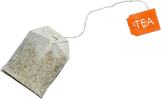
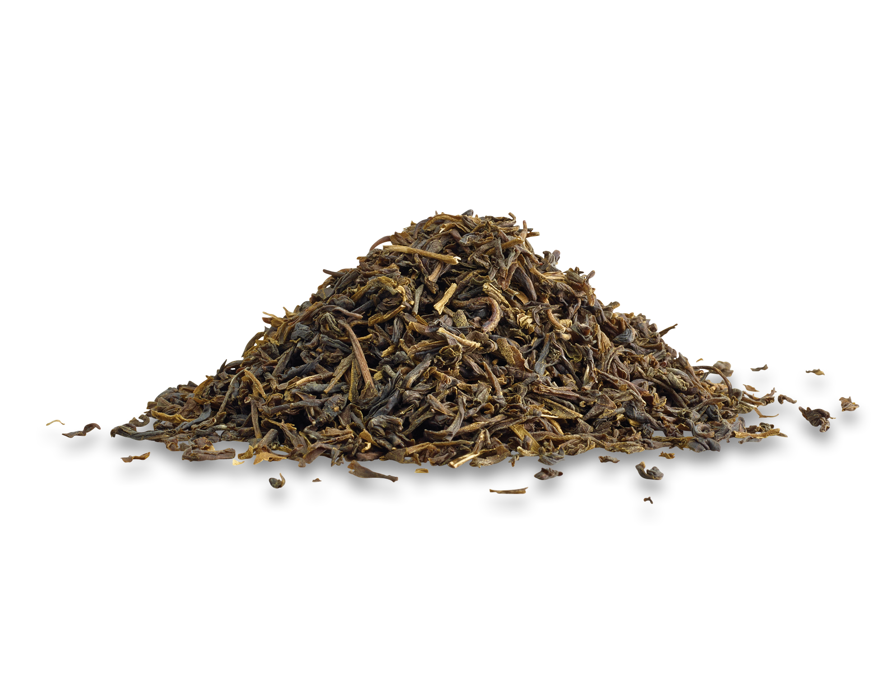
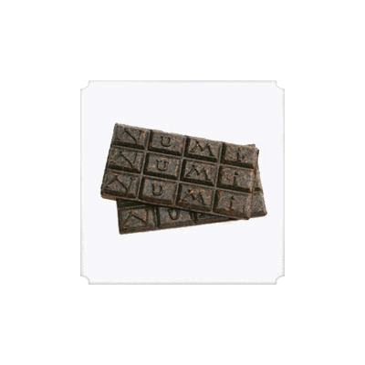
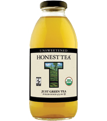

You know, there a lot of ways to package tea, and each one produces a different flavour. Bagged tea is the most common in the western world, although there is still quite a bit of loose tea. I, personally, prefer loose tea made in a teapot. But I also have a travel mug that I make it in, and let me tell you, that thing is so convenient.

Event • Ucation by unknown,
courtesy of Event • Ucation
The selling of bagged tea started out as just a happy accident when Thomas Sullivan started handed out tea in little bags made of Chinese silk and a drawstring. The people he gave it out to began to notice that they could simply leave the entire bag in water to steep, saving themselves some hassle. This packaging method was not fully developed until 1953. It was this year that Tetley brought around the bid tea bag idea, and it was an immediate hit with the people of the UK. Since then, there has been the development of the pyramid tea bag (which is, as you’d think, shaped like a pyramid), which addresses some of the tea experts complaints on the matter of a paper tea bag. This type of tea bag can be considered environmentally unfriendly, however, as the material isn’t as biodegradable as the paper tea bag.

Teame by unknown, courtesy of Tea Me
Loose tea, which is primarily black tea, is loose tea leaves normally stored some form of the container until it is needed to steep. Then, it is placed in a steeper (which is what a paper bag acts as in bagged tea) to be boiled in hot water. It is placed in a steeper so that the leaves of the tea do not get in your drink. These things can be put into anything, depending on the type you have. There are travel mugs and teapots, which have steeper meant to go in them, or you can have little strainers, with some sort of rod or string attached to it, that can go in just about any mug. There is also a more traditional one called a gaiwan, which is a three-piece lidded tea cup. The lid is titled and pours the liquid into another cup so that it can be drunk.

Tea Leaves by unknown,
courtesy of The concentrated club
Compressed tea, an example of which being Pu-erh, is made pretty more solely for the convenience of it. It will store longer than loose leaf tea. Compressed tea is just as it sounds. It is tea leaves compressed into a block or some other shape. When you want to drink it you cut off part of the block and then proceed to make it as though it were loose leaf tea.
This type of tea was mainly popular during the Tan dynasty in China, where it a specific series of steps were followed to create a frothy mixture. A similar thing was done in the Song dynasty, but rather than ground, combined with warm water, and ladled into bowls, it would simply be mixed with hot water with a whisk. It is not as popular in China anymore, having been replaced by loose leaf tea, but method similar to this is still used to prepare matcha by the Zen Buddhist monks in japan.

Honest Tea by unknown,
courtesy of Coca-Cola Journey
Canned was introduced by Japan in 1981, and is simply tea stored in a can and ready to drink. Bottle tea was first introduced by an Indonesian tea company called PT. Sinar Sosro on 1969 which they called Sosro bottled tea. Iced tea was first bottle on a large scale by Bischofszell Food Ltd. in 1983 .